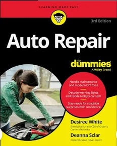
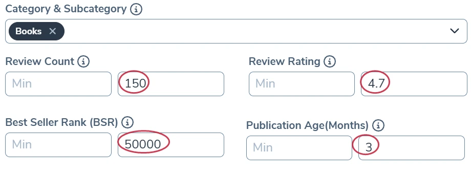

Wingman
WingmanOd czego zacząć, gdy nie masz tematu?
Otwieram Black Box z pustym polem słów kluczowych. Wybieram kategorię Books na Amazon.com. Chcę zobaczyć, jakie niedawno wydane książki już znalazły czytelników.
Wśród wyników trafiam na Auto Repair For Dummies. Książka ma zaledwie 13 ocen, a w Black Box zajmuje 42 940. miejsce w kategorii Books. To mój pierwszy trop. Sprawdzę poradniki o samodzielnej naprawie auta.

Auto Repair For Dummies13 ocen na Amazon.comZobacz książkę ↗Dlaczego ustawiłem takie filtry?
- BSR do 50 000
- Na początek zawężam wyniki do książek z wyższą pozycją w rankingu. Przy sprawdzaniu popytu na Amazon.com rozszerzam próg do 80 000. W mojej praktyce to orientacyjny trop przy szukaniu książek sprzedających się mniej więcej raz dziennie. BSR zmienia się względem innych książek, więc nie określa dokładnej liczby sprzedaży.
- Do 150 ocen
- To liczba, którą sam uważam za osiągalną. Zależnie od książki rozważyłbym też 250. Tytuły z tysiącem lub większą liczbą ocen zawsze omijam. Wolę konkurować z książkami, przy których sam mogę zebrać podobną liczbę ocen.
- Średnia do 4,7 gwiazdki
- Niższa ocena daje mi powód, by później zajrzeć do recenzji. Tam sprawdzę, czy czytelnikom brakowało czegoś, co mogę uwzględnić we własnym poradniku.
- Do 3 miesięcy od wydania
- Jeśli książka wydana w ostatnich trzech miesiącach jest już wśród pierwszych wyników dla mojej frazy, widzę szansę, żeby powalczyć o jej miejsce. Taki poradnik zdążył tam wejść z krótką historią sprzedaży. Trudniej mi dogonić książkę, która sprzedaje się od lat i zebrała tysiąc ocen.
Moje filtry w Black Box
